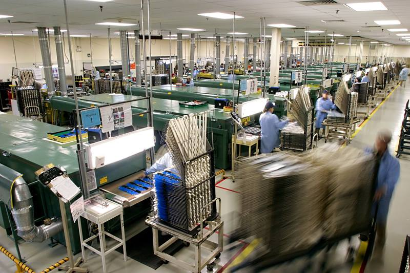
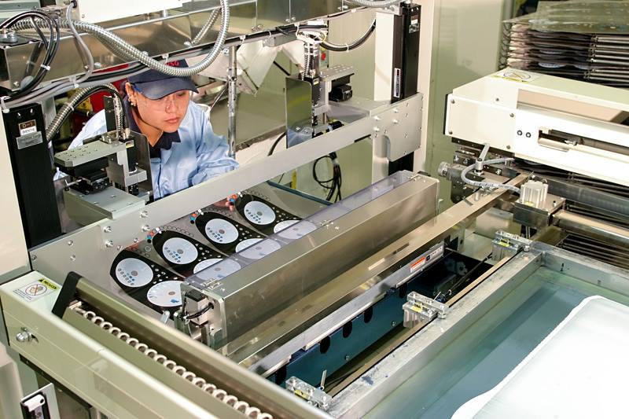
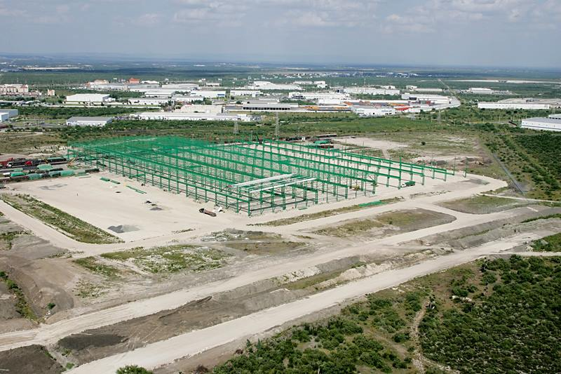

La fotografía industrial se utiliza como medio de registro y documentación de procesos, maquinaria e infraestructura, la fotografía se encarga de preservar la historia industrial, así como de establecer la identidad corporativa y promocionarla en ferias, periódicos, catálogos, informes o memoria comercial.